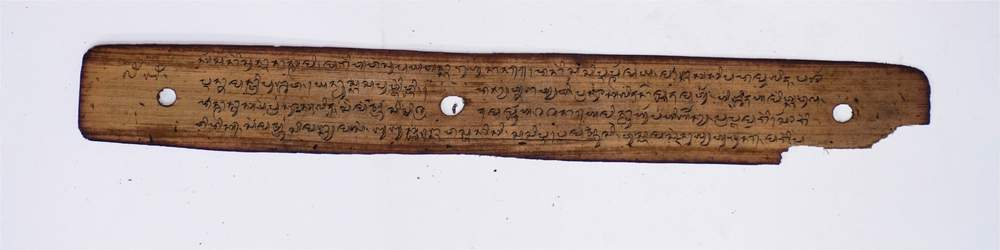

RENGGANIS
-

Ejaan Latin:
139.Kadarmanik manis matur, lamun meno jaq kakaq, nani bareng sugul. Rengganis manjurna lumbar. tangket Dewi Kadarmanik. Teiring isiq pawongan, tampak-ampak sesek laiq julu mudi, kembang mas terang tandur. teponggoq laiq arepan, sugul kuri menjak laiq teTatak,banjur Den Irman pedas iye,Teminan den dara siq sogul nemin. Den Irman manjuma rebaq, begoloq laiq tanaq begelutik. urasnano tokol manjur. nyongkok aturang sembah. duh pangeran apa sukan ratu ayu, mun mirah suka teumbaq, kaji umbaq sida gusti. Kelining desa Mukadam. rur ampoq mun dewa suka teiring, siq gamelan Lingkoq Dudu. yen baris atawa rudat, yadin teleq atawa siq Lengkoq Jantuk, kaji mirah nani nyanggupang, sesuka dekaji sairing. Silaq ngumbe pekayunan. banjurna nimbal Denda ayu Rengganis, duh pangeran Ratu Agung, kaji mindah nani yaq teumbaq, silaq eraq kaji yaq teumbaq Ratu Agung, Raden lrman siq tekewaq, ngemus lan dian makakejit. Pedas patung bayar alltap, Den lrman lamun siq ngemus makejit, pawonganna pada rereq selapuq, Raden lrman ia nengkakak, sampin muni ngumbe sukan Ratu ayu, mun dewa suka tegamelannang, kaji gamelan siq biwih. . Silaq ni mirah gedengang. mun gamelan kaji gampang gati, susah te yaq tejauq, Katir Regang keloh gedang, mun gamelan uni klewang kaji jauq, Silaq Dudus unin gendang, Gong Sebur aku uni. Perang Banget-Perang Banget Sengkor-Sengkur unin cecomprang, unin kekemong Jerah tundung, ita lnaq Rari unin tawaq. Jerowaru merariq te sorong dundung,
Arti Indonesia:
139.
- Kadarmanik manis matur, lamun meno jaq kakaq, nani bareng sugul. Rengganis manjurna lumbar. tangket Dewi Kadarmanik. Teiring isiq pawongan, tampak-ampak sesek laiq julu mudi, kembang mas terang tandur. teponggoq laiq arepan, sugul kuri menjak laiq teTatak,banjur Den Irman pedas iye,Teminan den dara siq sogul nemin. Den Irman manjuma rebaq, begoloq laiq tanaq begelutik. urasnano tokol manjur. nyongkok aturang sembah. duh pangeran apa sukan ratu ayu, mun mirah suka teumbaq, kaji umbaq sida gusti. Kelining desa Mukadam. rur ampoq mun dewa suka teiring, siq gamelan Lingkoq Dudu. yen baris atawa rudat, yadin teleq atawa siq Lengkoq Jantuk, kaji mirah nani nyanggupang, sesuka dekaji sairing. Silaq ngumbe pekayunan. banjurna nimbal Denda ayu Rengganis, duh pangeran Ratu Agung, kaji mindah nani yaq teumbaq, silaq eraq kaji yaq teumbaq Ratu Agung, Raden lrman siq tekewaq, ngemus lan dian makakejit. Pedas patung bayar alltap, Den lrman lamun siq ngemus makejit, pawonganna pada rereq selapuq, Raden lrman ia nengkakak, sampin muni ngumbe sukan Ratu ayu, mun dewa suka tegamelannang, kaji gamelan siq biwih. . Silaq ni mirah gedengang. mun gamelan kaji gampang gati, susah te yaq tejauq, Katir Regang keloh gedang, mun gamelan uni klewang kaji jauq, Silaq Dudus unin gendang, Gong Sebur aku uni. Perang Banget-Perang Banget Sengkor-Sengkur unin cecomprang, unin kekemong Jerah tundung, ita lnaq Rari unin tawaq. Jerowaru merariq te sorong dundung,
Arti Inggris:
139.